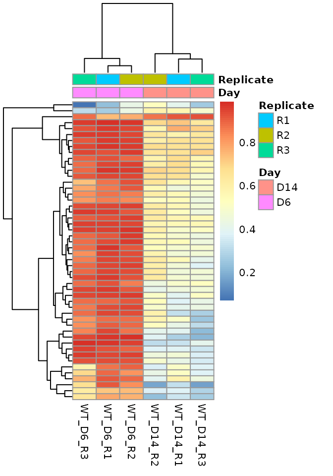
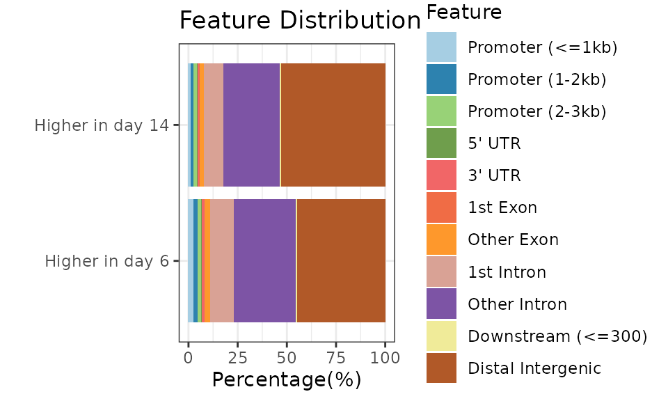
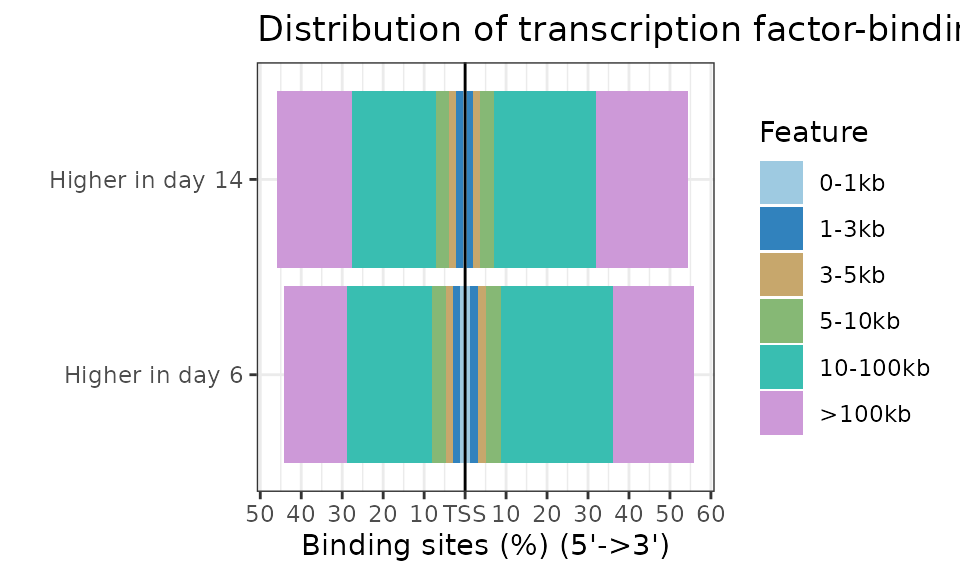

04-DMRs.RmdIdentifying Deferentially methylated regions (DMRs) can be done using within R or using external command line programs. Here we describe how methrix object can be used with both the approaches. For DMR calling in R, popular programs include DSS, DMRseq. Outside R, metilene offers a fast and simple alternative. Note that DNRseq and DSS can be resource hungry with run rimes often involving hours. Metilene however is ultrafast and lightweight with small memory footprint.
A very important step of a WGBS data analysis is the differential methylation calling. During this step, we would like to identify changes between groups or conditions first on the site level. Then, we will need to identify larger regions (DMR-s, differentially methylated regions) affected by methylation changes that are more likely to represent functional alterations. Methrix doesn’t have a DMR caller, therefore we will use DSS. At this stage, DSS is not yet able to work directly with methrix, therefore we transform our methrix object to bsseq for the sake of DMR calling.
if(!requireNamespace("DSS")) { BiocManager::install("DSS") } library(DSS)
For more detailed description, options and recommendations on smoothing, please refer to the ´DSS´ vignette
bs_obj <- methrix::methrix2bsseq(meth) bs_obj #> An object of type 'BSseq' with #> 28217448 methylation loci #> 6 samples #> has not been smoothed #> All assays are in-memory
dmlTest = DSS::DMLtest(bs_obj, group1=rownames(sample_anno)[sample_anno$Day=="D6"], group2=rownames(sample_anno)[sample_anno$Day=="D14"], smoothing = TRUE)
DMRs:
head(dmrs) #> chr start end length nCG meanMethy1 meanMethy2 diff.Methy #> 292302 chr7 1686521 1687244 724 36 0.9253184 0.4316565 0.4936619 #> 120729 chr16 73582841 73585140 2300 28 0.8963596 0.3711405 0.5252191 #> 91590 chr13 112225194 112225927 734 22 0.9684702 0.3701374 0.5983328 #> 122302 chr16 85482141 85483212 1072 41 0.7926689 0.4123773 0.3802916 #> 897 chr1 10732115 10733515 1401 37 0.9412203 0.5546301 0.3865901 #> 195240 chr3 18411127 18413011 1885 25 0.9463775 0.4042538 0.5421237 #> areaStat #> 292302 258.9261 #> 120729 224.1427 #> 91590 220.4902 #> 122302 201.0486 #> 897 196.7819 #> 195240 191.6146
DMLs:
head(dmls) #> chr pos mu1 mu2 diff diff.se stat #> 115002 chr1 7164841 0.9478878 0.20845803 0.7394297 0.05289578 13.97899 #> 238604 chr1 17112454 0.9218719 0.30521631 0.6166556 0.06054654 10.18482 #> 278735 chr1 20577038 0.8532530 0.06043134 0.7928217 0.04640743 17.08394 #> 342292 chr1 25803237 0.8620008 0.26811728 0.5938835 0.05771677 10.28962 #> 484470 chr1 38802438 0.9382340 0.31429739 0.6239366 0.05476446 11.39309 #> 580547 chr1 48508231 0.8705919 0.26986039 0.6007315 0.05822061 10.31819 #> phi1 phi2 pval fdr postprob.overThreshold #> 115002 0.04792590 0.05572107 2.094283e-44 1.277624e-38 1 #> 238604 0.04677971 0.05479802 2.317896e-24 1.353868e-19 1 #> 278735 0.04869763 0.07494907 1.954656e-65 5.365998e-59 1 #> 342292 0.04616408 0.06169127 7.848714e-25 4.967516e-20 1 #> 484470 0.05334149 0.06542750 4.526264e-30 6.061307e-25 1 #> 580547 0.06240985 0.05203124 5.830977e-25 3.825611e-20 1
dmrseq
A popular R package for DMR calling is dmrseq. For more detailed description of the possibilites, see the vignette.
if(!requireNamespace("dmrseq")) { BiocManager::install("dmrseq") } library(dmrseq) register(MulticoreParam(2)) testCovariate <- "Day" regions <- dmrseq::dmrseq(bs=bs_obj[240001:260000,], cutoff = 0.05, testCovariate=testCovariate, verbose = T)
Metilene
If you prefer using Metilene which is significantly faster than R based tools, you can export the methrix object to Metilene input file formats.
dir.create(path = "./metilene/", showWarnings = FALSE, recursive = TRUE) methrix::write_bedgraphs(m = meth, output_dir = "./metilene/", rm_NA = FALSE, metilene = TRUE,multiBed = "metline_ip", phenoCol = "Day", compress = FALSE)
#---------------------- #*Writing ./metilene//metline_ip.bedGraph.gz #----------------------
Once the file is generated, you can run metilene which should take less than couple of minutes to finish.
$ ./metilene_v0.2-8/metilene -t 4 -a D14_WT -b D6_WT metilene/metline_ip.bedGraph > metilene/D14_vs_D6.tsv
#Sort output by q values
$ cat metilene/D14_vs_D6.tsv | sort -k 4 | head# chr6 163235589 163236271 0.00010009 -0.464417 12 2.717e-12 1.7226e-11 0.499 0.96342 # chr16 72935841 72936574 0.00010268 -0.593495 13 9.7322e-13 1.7671e-11 0.31243 0.90592 # chr3 126891865 126892175 0.00010581 -0.548356 13 1.7963e-13 1.8211e-11 0.27462 0.82297 # chr2 13448747 13448946 0.00011202 0.142889 24 1.3844e-13 1.9279e-11 0.99314 0.85025 # chr1 18381792 18381953 0.00011518 -0.464353 10 5.7773e-11 1.9823e-11 0.45378 0.91813 # chr8 38587666 38587922 0.00011689 -0.475570 10 3.8831e-11 2.0118e-11 0.4333 0.90887 # chr1 44030377 44030580 0.00011877 -0.705450 10 3.1796e-11 2.0442e-11 0.11405 0.8195 # chr17 77158527 77158873 0.00012301 -0.488690 10 4.7383e-11 2.117e-11 0.45551 0.9442 # chr17 75588404 75588890 0.00013396 -0.523367 10 3.1796e-11 2.3054e-11 0.412 0.93537 # chr2 222317260 222317626 0.00013438 -0.598000 10 3.5142e-11 2.3128e-11 0.3712 0.9692
We can visualize certain regions and/or DMRs using the Gviz package. The plotting function is included in the best_practices_WGBS.Rmd file.
dmrs <- makeGRangesFromDataFrame(dmrs, keep.extra.columns = TRUE)
genome <- "hg19" mart <- useMart(biomart="ENSEMBL_MART_ENSEMBL", host="feb2014.archive.ensembl.org", dataset="hsapiens_gene_ensembl") i <- 5 #candidate_region <- GRanges(paste0(seqlevels(dmrs)[i], ":", start(dmrs)[i], "-", end(dmrs)[i])) candidate_region <- dmrs[i] region_plot(m = meth, region=candidate_region, mart=mart, genome=genome, groups=meth$Day, dmrs=dmrs) #the region_plot function is available in the best_practices.Rmd file.
heatmap_data <- as.data.frame(methrix::get_region_summary(meth, makeGRangesFromDataFrame(dmrs))) heatmap_data <- heatmap_data[complete.cases(heatmap_data),] rownames(heatmap_data) <- paste0(heatmap_data$chr,":", heatmap_data$start, "-", heatmap_data$end)
Top 50 DMRs
pheatmap::pheatmap(mat = head(heatmap_data[,-(1:5)], 50), show_rownames = FALSE, annotation_col = as.data.frame(meth@colData), fontsize = 8)

if(!requireNamespace("plotly")) { install.packages("plotly") } if(!requireNamespace("ggplot2")) { install.packages("ggplot2") } if(!requireNamespace("scales")) { install.packages("scales") } library(plotly) library(ggplot2) library(scales)
count <- c("Higher methylation in day 14" = length(dmrs[dmrs$diff.Methy<0,]), "Higher methylation in day 6" = length(dmrs[dmrs$diff.Methy>0,])) length <- c("Higher methylation in day 14" = sum(width(dmrs[dmrs$diff.Methy<0,])), "Higher methylation in day 6" = sum(width(dmrs[dmrs$diff.Methy<0,]))) data <- data.frame(Direction=c("Gain", "Loss"), Count=count, Length=length) g <- ggplot(data=data)+geom_col(aes(x=factor(1), y=Count, fill=Direction), position = "dodge")+theme_bw()+theme(axis.title.x = element_blank(), axis.text.x = element_blank())+scale_fill_brewer(palette = "Dark2")+ggtitle("Number of differentially methylated regions")+scale_y_continuous(labels = comma) ggplotly(g)
p <- ggplot(data=data)+geom_col(aes(x=factor(1), y=Length, fill=Direction), position = "dodge")+theme_bw()+theme(axis.title.x = element_blank(), axis.text.x = element_blank())+scale_fill_brewer(palette = "Dark2")+ggtitle("Length of differentially methylated regions")+scale_y_continuous(labels = comma) ggplotly(p)
To describe and interpret the differentially methylated regions, we can use the ChIPseeker package. The location of the DMRs can already give us a hint the involved processes, but once we assign the regions to genes, a pathway enrichment analysis is also possible. For additional details, see the vignette of ChIPseeker:
## loading packages if(!requireNamespace("ChIPseeker")) { BiocManager::install("ChIPseeker") } if(!requireNamespace("TxDb.Hsapiens.UCSC.hg19.knownGene")) { BiocManager::install("TxDb.Hsapiens.UCSC.hg19.knownGene") } if(!requireNamespace("ReactomePA")) { BiocManager::install("ReactomePA") } if(!requireNamespace("clusterProfiler")) { BiocManager::install("clusterProfiler") } library(ChIPseeker) library(TxDb.Hsapiens.UCSC.hg19.knownGene) txdb <- TxDb.Hsapiens.UCSC.hg19.knownGene library(ReactomePA) library(clusterProfiler)
peakAnnoList <- lapply(list("Higher in day 14"=dmrs[dmrs$diff.Methy<0,], "Higher in day 6" = dmrs[dmrs$diff.Methy>0,]), annotatePeak, TxDb=txdb, tssRegion=c(-3000, 3000), verbose=FALSE) ChIPseeker::plotAnnoBar(peakAnnoList)

ChIPseeker::plotDistToTSS(peakAnnoList)
